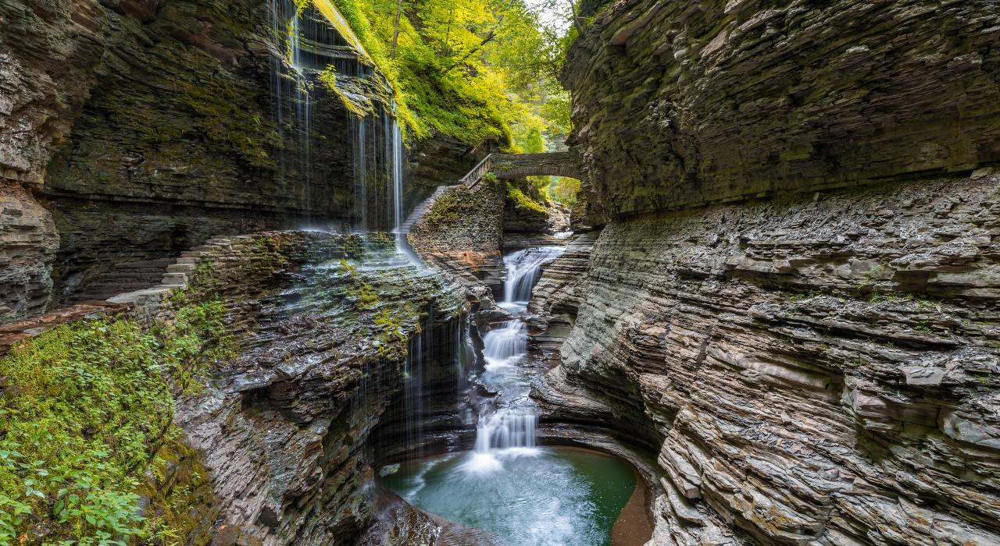
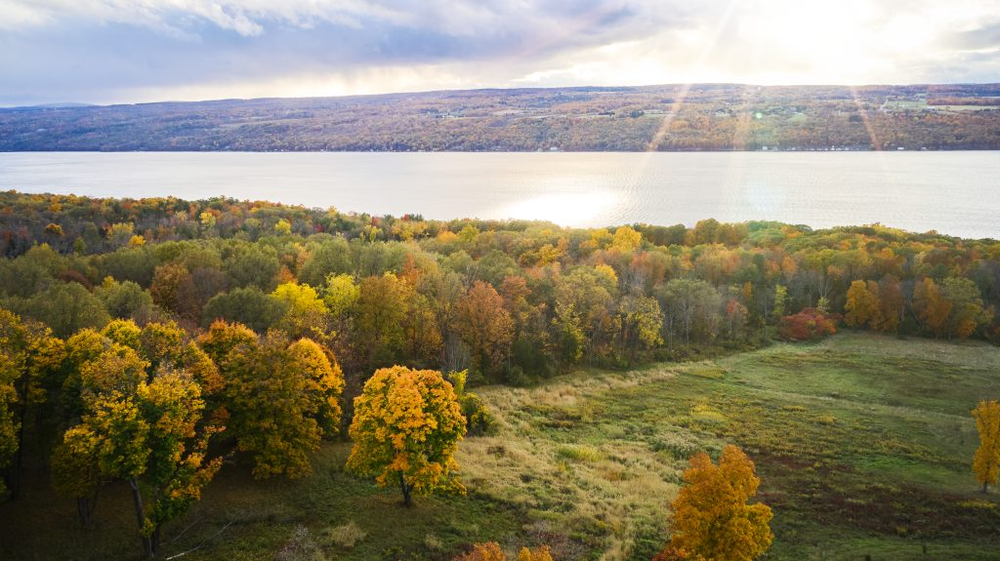
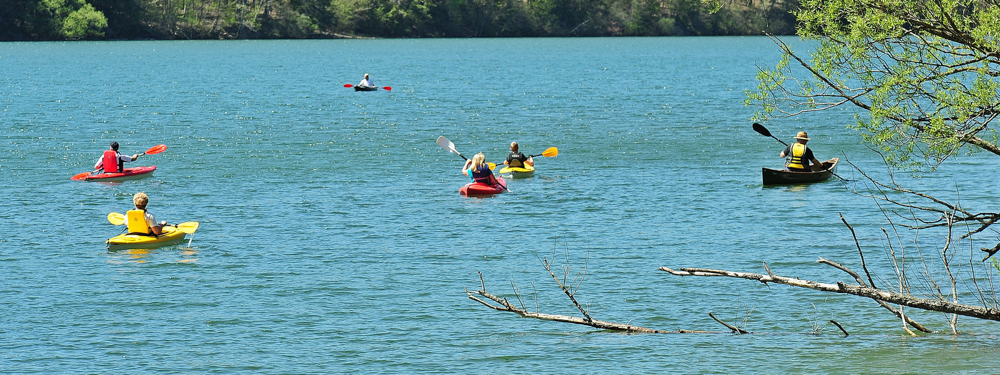
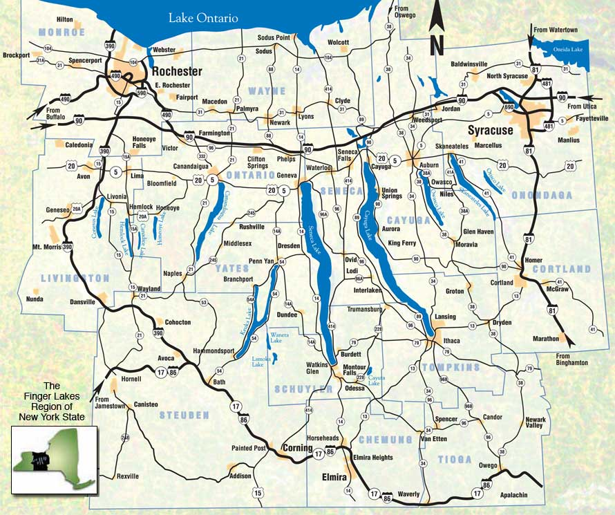
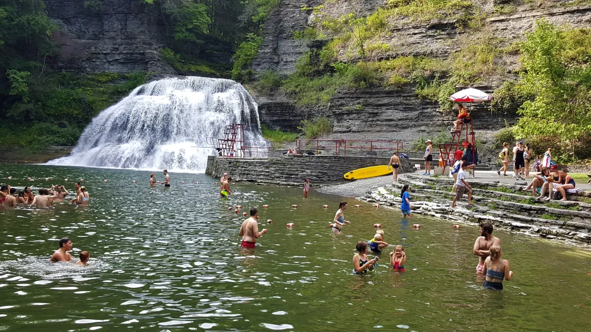

The finger lakes should be your next stop for a trip. With eleven different major lakes to choose from you won’t be disappointed. The finger lakes are known for their beautiful views and sceneries. With many activities both outdoors and indoors you are certain to have a great time. The finger lakes have a great history to go along with its fun activities and beautiful landscape. Read on to be further enticed to make the trip out here!

Two million years ago glacial flows started to melt and travel through New York carving trenches for water to settle in. They created long deep valleys where water collected creating the finger lakes. The lakes were originally settled on by native americans. After the Revolutionary War the Europeans moved the Native Americans from their sacred land to reservations. The Iruois, one of the most powerful Indian nations were able to fight off the Europeans for two centuries, before finally losing their land.

Along with the amazing sceneries the finger lakes offer a great deal of outdoor activities to partake in. From water sports like kayaking, canoeing, and even water biking you are guaranteed to stay active. You can also take a more relaxed approach with just floating in the water or going fishing. If you want to take a break from the outdoors you can visit Eastview mall, which is one of the largest in New York, or take a trip to the nearby spa to really take advantage of your relaxation and trip. If you wish to visit in the winter take a trip to Bristol Mountain for some skiing and snowboarding.

Nestled in the heart of the Pacific Northwest, the towering Cascade Mountains stretch endlessly, their peaks kissed by clouds and dusted with snow even in midsummer. Each turn of the winding trails reveals a new surprise: a crystalline lake reflecting the azure sky, a field of wildflowers swaying gently in the breeze, or the distant echo of a waterfall cascading into a hidden valley below. The air is crisp and cool, carrying the faint scent of pine and earth, a reminder of the untamed wilderness that surrounds you. In this serene landscape, time seems to slow down, offering a perfect retreat for those seeking solace, adventure, or simply a moment to reconnect with nature.
